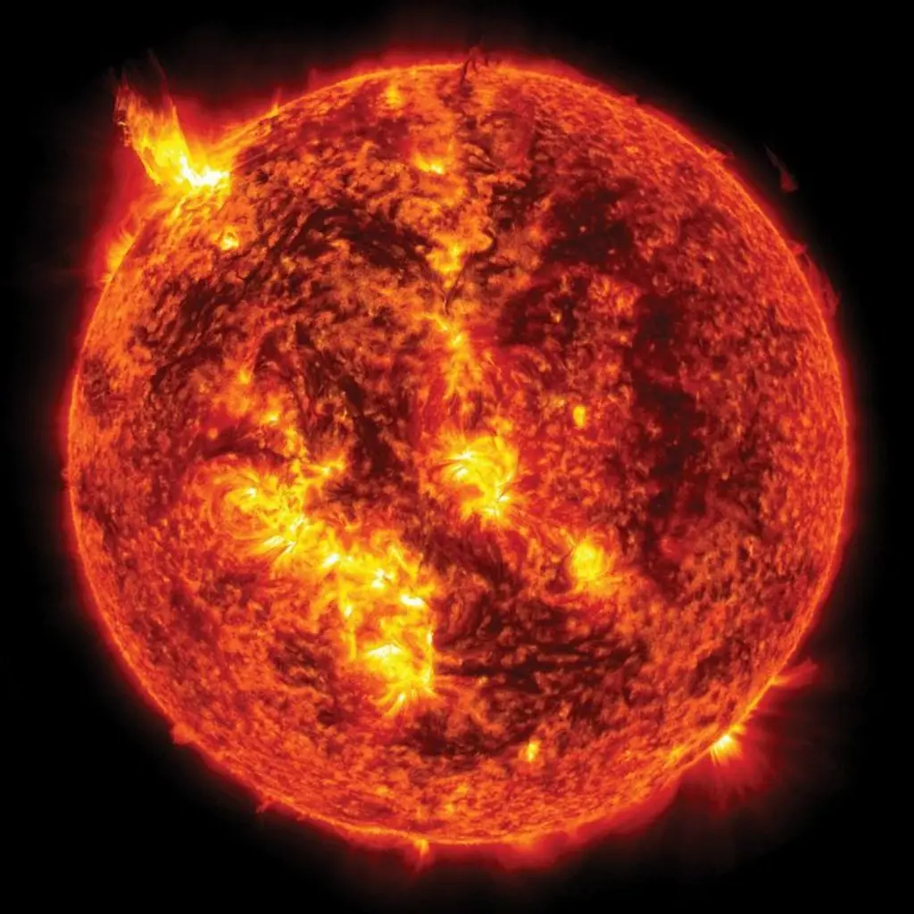
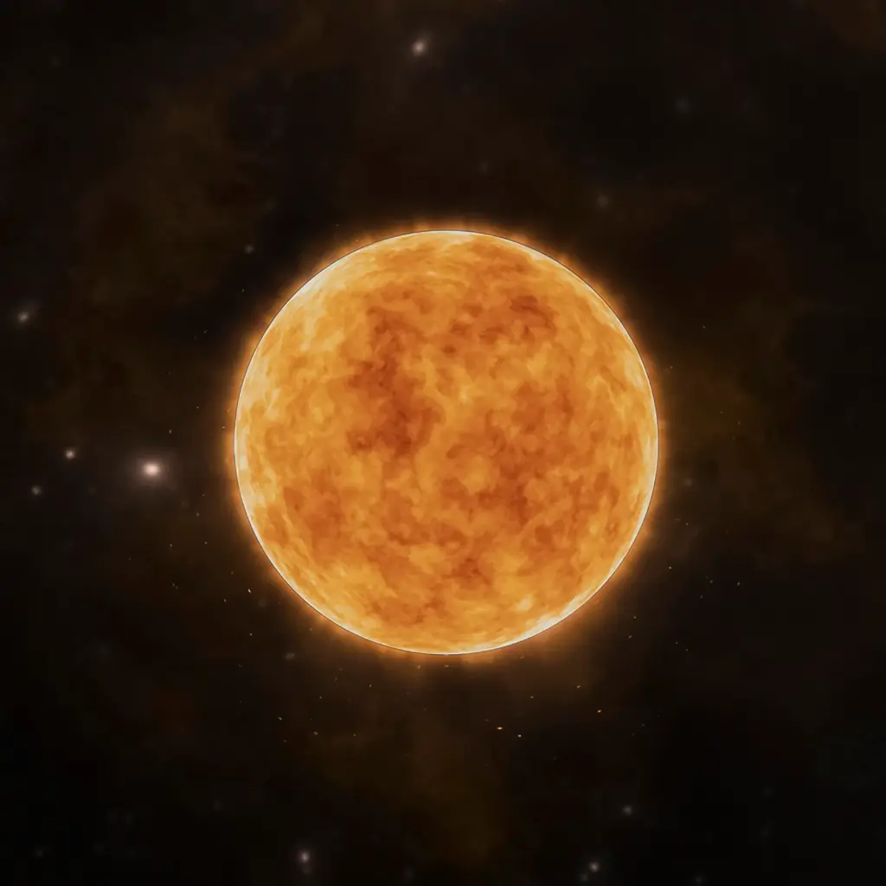
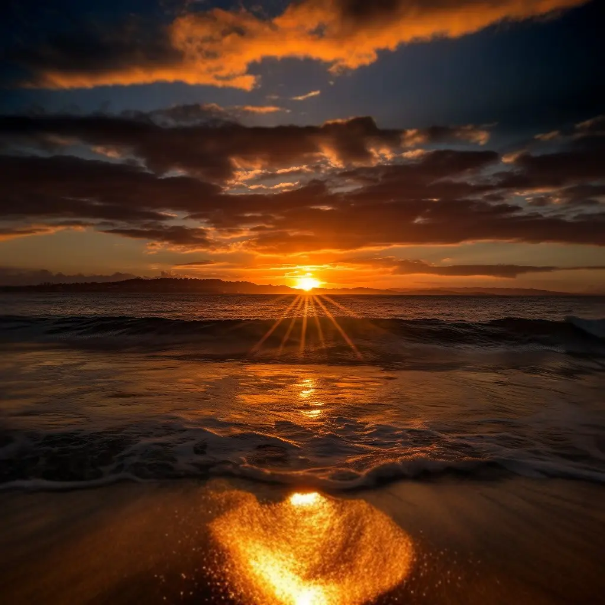

Sol
- Diámetro: 1.391.000 km
- Masa: 1.989 × 10^30 kg
- Temperatura superficial: Superior a 15000000°C
El Sol es una estrella que se encuentra en el centro del sistema solar y constituye la mayor fuente de radiación electromagnética de este sistema planetario. Es una esfera casi perfecta de plasma, con un movimiento convectivo interno que genera un campo magnético a través de un proceso de dinamo.
Caracteristicas principales:
Se formó hace aproximadamente 4600 millones de años a partir del colapso gravitacional de la materia dentro de una región de una gran nube molecular.
La Tierra y otros cuerpos orbitan alrededor del Sol. Su luz recorre esta distancia en 8 minutos y 20 segundos.La energía del Sol, en forma de luz solar, sustenta a casi todas las formas de vida en la Tierra a través de la fotosíntesis, y determina el clima de la Tierra y la meteorología.
- 
- 
- 